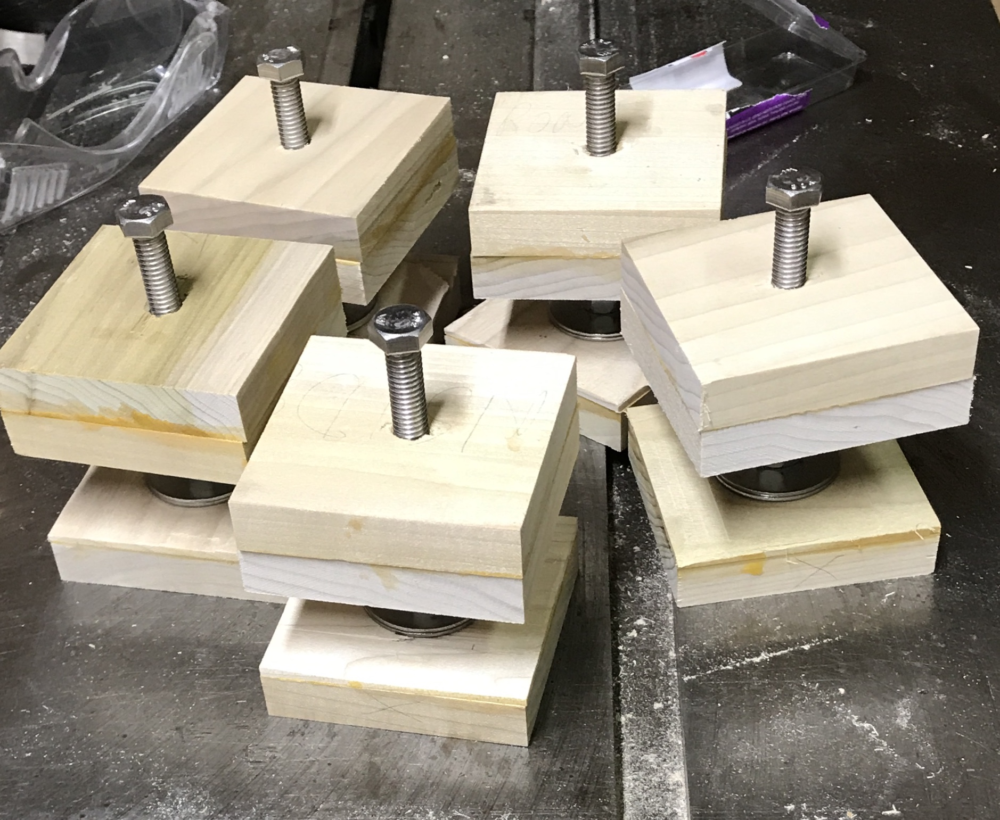
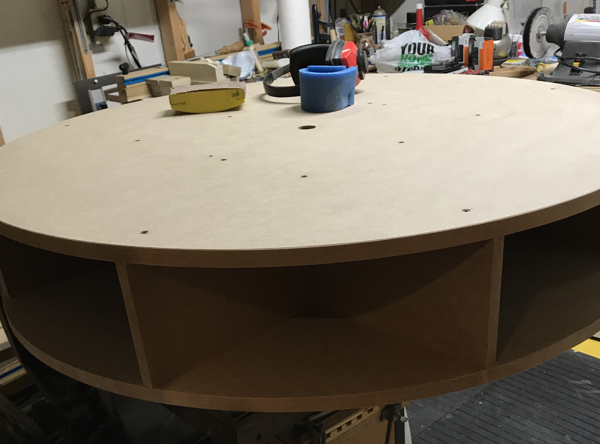

The basement shop is so crowded that I cannot utilize the tools that I have. ShopNotes (Issue 35, pg 16) has an article on making a revolving tool cabinet. The top is designed to hold four benchtop power tools and turn so that each can be used when needed. The bottom cabinet also contains a turntable so that other tools can be stored inside. A picture from the magazine is shown below.

I would like to have the polisher, small drill press, scroll saw, and a sander (similar to what is seen in the picture) on the revolving table. Many different tools would be better stored under the table than as they are currently scattered across shelves. The drill press that now occupies that corner will need to be moved up to the garage, where the small drill press resides. It is possible both the drill press and table will fit between the lathe and workbench. I have just cleaned out the wood that was stored under the stairs behind this corner. Some minimal under stair shelving would need to be made to have access to the fraction of wood that was not thrown away. A short shelf on the West stair wall would need to be moved. The only remaining challenge is the height of the station. It is about 2" taller with the drill press on it than is available under the shelf on the North wall. A study of the plans indicates that the inside height of the cabinet could be shrunk 1-2" and the revolving top could also be shrunk about 1/2-1". This should provide the required headroom. Raising the shelf is also a possibility.
The wood that was saved ended up up back under the stairs or was carried to the attic. An 'inventory' was taken by photographing both sites and adding the pictures to a Note: Wood Storage.
The required materials is a long list. Two and one-half sheets of 3/4" MDF are used to build the revolving top and the cabinet. About 15' of 3/4" X 3" lumber is needed for assorted support structures. The drawer fronts and backs use over 12' of 3/4" X 6" lumber. The drawer sides and bottoms will require a 1/4" X 4' X 4' sheet of hardboard or HDF. The hardware needed is listed in the table below and screws in the second table.
| Item | Number | Size |
|---|---|---|
| Roller Bearings (Amazon or HF) | 14 | 1" |
| Barrel Bolts | 2 | 4" |
| Pipe Flange | 1 | 3/4" |
| Iron Pipe* | 1 | 3/4" X 28" |
| Sash Handles | 4 | 4" |
| T-Nuts | 5 | 3/8-16 |
| Lock Nuts | 10 | 3/8" |
| Full Thread Hex Bolts | 5 | 3/8-4" |
| Fender Washers | 10 | 3/8-1 1/2" |
| Flat Washers | 5 | 3/8" |
*The iron pipe may need to have its length reduced, if the tool station's height is reduced.
| Screw Type | Number | Size |
|---|---|---|
| Panhead | 28 | 3/4" |
| Flat Head Sheet Metal | 98 | #8-1 1/2" |
| Flat Head Sheet Metal | 10 | #8-2" |
| Flat Head Sheet Metal* | 24 | #6-1/2" |
| Flat Head Sheet Metal | 19 | #6-3/4" |
| Flat Head Sheet Metal | 36 | #6-1 1/4" |
| Flat Head Sheet Metal | 15 | #8-1 1/4" |
A few activities need to take place prior to beginning this project in earnest. The large drill press and its stand need to be moved to the garage after a spot has been cleared. The shelving for the wood needs to be made and installed between the studs to the left of the current position. Either the plans need to be modified to lower the height of the revolving tool station or the bottom shelf on the North wall needs to be raised (3" to play it safe).
Today was moving day. I threw out a lot of crap in the garage to make room for the drill press yesterday. The motor was removed from the drill press first. It was turned so the motor was over the table saw. A 4" length of steel pipe and a few boards supported the motor while unscrewing it. The drill press was then lowered to sit on the hand truck. A rope was tied around the press and the hand truck to hold it in place. The hand truck was then pulled up the stairs step-by-step. That was 16 tough squats!! The drill press was moved to the garage as was the table it sat on. The table was placed between the workbench and the lathe and the bowl maker was placed on it. The drill press was lifted to the top of the cabinet. A number of motor support ideas were tried and discarded before realizing the drill press has a built-in motor support, the table. It was raised and the pipe was set on it to hold the motor. A little adjustment and the motor was sitting at a height that kept the installed belt even. The motor was centered left/right and the four bolts were installed. The drill press was then fixed to the table with 3 screws. The pictures show the table and cabinet in place with their new tools.


Notice the newly hung fire extinguisher!!
Today (8/31/19) it was back to the basement. Two shelves were removed, the long shelf in front of the stairs and the small shelf that held drill press accessories. The long shelf was shortened by about 5" and attached under the stairs to serve as support for the scrap wood that was moved South by one stud. The shelf on the North wall was then emptied, raised by 3" and refilled. Consequently, the tool station will not need its height decreased. The corner of this shelf had to be cut out (3" X 3") to fit around a shelf bracket by the stairs. Now I need to figure out where to temporarily put all of the stuff that covers the table saw and workbench, so the tool station can be built. (Most of it was hidden under the toy pool table or in the closet shop.)

Sandy and I got the MDF yesterday at Menards. The sheets (49 X 97) were slightly too large to lay flat in the bed of her truck so they went in at an angle. They are quite heavy! We unloaded them in the garage. I marked out the first sheet and started cutting out parts. The second sheet was laid out as well. This layout presents some cutting challenges. The two L-shaped parts, cabinet top & bottom, are laid out in the corners with a rectangular piece in between them on the other edge. This means the two L-shaped parts need to be cut out around this rectangular part. So at least one cut must start in the middle of the sheet. The inside corners of the L-Shaped parts need to be finished with a hand saw.
The circular saw cuts 1 5/8" to the left of the right edge; leaving the cut on the outside of the line with the straight edge outside of the part. If the straight edge is inside the part then the blade width (3/32)has to be subtracted from this measurement (i.e. 1/32" less than 1 1/2").
The L-shaped cuts were made and then the cabinet side was cut out. Cuts were finished with the Japanese saw. The cabinet top and bottom were then finished. The third piece of MDF was used for the carousel bottom and two dividers leaving a 50" X 49" piece of MDF. The garage was cleaned up with a broom and vacuum. A few parts need some clean-up with the table saw. Hardware was ordered today. The transfer bearings were ordered from Amazon. The wallboard screws, panhead sheet metal screws, iron pipe, flange, barrel bolts, T-nuts, lock nuts, hex bolts, and washers were purchased at Menards. I have old cabinet handles for the drawers. Eventually, more wood will be needed for drawers and other things. The wood storage in the attic will be perused prior to purchase.
The 3/4" dado was cut in all four parts of the base. These dadoes were cut 3" from the bottom of each piece. It is a nice tight fit on the MDF. The right back part was originally cut 1/4" short. This was repaired by gluing and screwing on a 1/4" X 3/4" length of Baltic birch. A number of things need to be done prior to assembling the base, including attaching the transfer bearings. These do not arrive until next Wednesday. Other things will be tackled in the interim. The first is cutting the 3/4" X 3" slots in the carousel dividers. This was done by hand. The slots were marked on the bottom and both sides of the cut with a knife. The knife marks were continued around both sides. The slots started 10 3/8" from the ends and were 3" deep. The sides of the slot were sawed by hand and the waste was removed with a chisel. The picture below shows the grid assembled.

Notice the two extraneous slots in the centers of two dividers? Oopshi! And, no, the grid is not leaning. It is quite straight and sturdy.
This morning some odds and ends were cut to size. Somewhere between 15 & 20 squares (3" X 3") of 3/4" lumber are needed for the base. Most are used for the feet. Since I had a variety of short boards from the joinery class (5/8" thick), I decided to use them as I don't believe the exact thickness is that important. The poplar pieces were ripped to 3" width on the table saw and then cross cut into 3" lengths. 25 squares were made from these scraps. Three of these were made from 3/4" poplar and will be used for the pipe "bearings". Some wood cutoffs in the attic were cut to make the rails. These support the bottom and top of the base. Two lengths of pine were cut to 33" and two were cut to 15". These were then ripped to 3" width.
I began to tackle the many tasks needed prior to assembling the base. The center of the bottom was marked and then seven marks were made 13" from this center every 45°. The bearings were centered over these marks and screwed to the bottom with pan head sheet metal screws after drilling pilot holes. Then the five holes for the levelers were laid out 1 7/8" from the edges and 3" from the cutout edges. They were all drilled through with a 1 1/8" Forstner bit. I then glued up five pairs of the 3" X 3" blocks to make a block that is 1 1/4" thick.

After letting the glue dry on the leveler tops they were drilled. A 3/8" hole was drilled through the block on center and then this hole was opened to 7/16" for half the thickness of the block (5/8"). The T-nuts were hammered into the leveler tops. An attempt to drill a 1 1/8" hole in a foot deep enough for a washer and a 3/8" lock nut demonstrated that the 5/8" wood was not thick enough.This hole needs to be nearly 5/8" deep. Consequently, some new feet will need to be cut from 3/4" stock. Could not find any appropriate 3/4" stock so glued up pairs of 5/8" X 3" X 3" blocks like the leveler tops. These blocks were drilled 5/8" deep with the 1 1/8" Forstner drill bit. They were then "thinned" to a little over 3/4" by two passes over a 3/4" wide dado blade on either side (dangerous cuts!!). The waste was removed from the middle with a chisel. The feet were cleaned up with the scraper. A 4" long 3/8"-16 bolt was put through the leveler top coming out the side of the T-nut. A lock nut was threaded on until threads had been cut into the plastic, removed from the bolt and put on backwards. Two fender washers were put over the bolt, followed by the foot, a 3/8" washer, and a second lock nut. The two lock nuts were tightened together to capture the foot. All five levelers are complete and ready to be attached when the cabinet bottom has been attached to the sides.
The top was tackled next. It only required two modifications. The bearings were attached as before except on a 16" circle. A 1 1/8" hole was drilled in the center for the pipe. The three 3/4" X 3" X 3" collar blocks were also drilled to 1 1/8" on center. The rails were screwed together 15" from the front end of the long rail with two 1 5/8" screws. I think the cabinet base is ready to be assembled.
The left and right back were held together with clamps on a square board in the corner. In order to attach the two parts with #8 screws, four holes were drilled in both parts with the 1/8" drill bit and then through the right back with the 3/16" drill bit. Prior to assembly glue was put on the ends of the relevant parts: both ends of the left back, one end of the right back, and four edges of the bottom (not the notch). The glue was allowed to dry for 30 minutes. Glue was again applied to the left back edge and the right back was screwed in place using 1 5/8" screws. In a similar fashion four holes were drilled through the left side into the left back. Glue was applied to the edge of the left back. After aligning the left side the screws were driven through the left side and into the left back.
Glue was placed in the dado and the bottom was pushed (hammered!!!) into place. With various rotations of the base access to the sides could be gained and 1 1/4" screws were put into place all around the dado. In retrospect it might have been easier to put the bottom into place with only the two backs and then add the left side.
Even with the pounding and screw tightening the bottom still sticks out the right side by about 5/8". It will need to be planed to 3/8" prior to attaching the right side.
The levelers were installed by first drilling through the top with a 3/16" drill in two corners and then drilling into the cabinet bottom using the leveler top as a template. The leveler tops were screwed in place using #8 X 2" screws. The bolt was then threaded into an upside down lock nut, two fender washers were added, the foot was put in place, and a 3/8" washer was added before the final lock nut. The lock nuts were brought close but not tight allowing some movement of the foot. The picture below shows the levelers in place.

Rhea helped install the leveler in the corner furthest from the notch, as I had to lay on the floor under the cabinet to reach the bolt with a wrench.
The excess bottom was mostly removed with a jig saw and then completed with a finish saw and a small plane. Now about 1/4" protrudes beyond the right back. Glue was applied to this edge and left to dry for 1/2 hour. The two remaining sides were glued and screwed into place. The support for the bottom was installed and then the support for the top was installed giving a very solid box. The top was then screwed on (didn't glue, but could be done in the future) to the sides and the support with 1 5/8" screws. This completed the base cabinet sans turntable.

A simple circle cutting jig was made from a 1/4" X 6 3/8" X 28" scrap of plywood for routing the three circles . The router base was set at one end of this plywood and the three mounting holes were marked with a transfer punch. These holes were drilled 3/16". The center of this three-hole circle was found by drawing a line between two holes and a vertical at its center. Estimates were made to find the center of the triangle and thus the center of the circle. The carbide router bit chosen for the work is 3/8" in diameter so the corresponding drill bit was used to drill a hole at the center of the circle. A small #10 bolt will be used as the pivot so two holes were drilled 15" and 20" from the inside edge of the 3/8" hole with a 3/16" drill bit for the 30" and 40" circles, respectively.
The 30" X 30" square for the turntable was temporarily attached to a 7" X 25" MDF board with six 1 1/4" screws. This board was then clamped in the Workmate. The cutout was laid out (13 7/16" X 13 7/16") and the center was marked. The cutout was removed with the circular saw followed by a hand saw. Using the drafting compass a 15" circle was marked on the board. The jig saw was used to cut off most of the waste leaving 1/8" to 1/4" waste for the router. The center of the board was drilled 3/16" and the router jig was held in place with a #10 bolt. The router was moved in a counterclockwise direction and very quickly and remarkably easily produced the required 3/4 of a circle.
Next the strike plates were installed. I had 1" X 1" aluminum angle on hand. Two 2" lengths were cut off with a hacksaw and both pieces were then trimmed to 3/4" X 3/4" with a hacksaw. The burrs were removed with a file. The plates were drilled for #6 screws and countersunk. The plates were held against the edge of the turntable 1" from the edge of the cutout and marked both on the face of the cutout and the bottom. An Exacto knife was used to score the marked lines as well as a line 1/8" in on the top face. A chisel was used to remove the waste material. With the plates held in place the holes were marked. After drilling the holes about 3/4" deep the strike plates were screwed in place. The 4" draw bolt was aligned with the edges of the cutout and the circle. The holes were marked, drilled and the draw bolt was screwed into position. The center hole needs to be opened to 1 1/8".

This morning carousel construction began. The 40" X 40" sheets of MDF were laid on the Workmate in the garage and the centers were found. The holes for attaching the circles to the grid were laid out. Five holes for each of the four grid legs at 3 1/4", 12 1/2", and 20" from one side as well as 3 1/4" and 12 1/2" from the opposite side were marked. (Four are common to two grid legs.) After Rhea left for dance camp at Oconomowoc the 40" circle was drawn with a quickly made compass. A long strip of 1/2" X 3/4" pine was drilled near one end 3/16" to fit the centering bolt in the router fixture. 20" away a second hole was drilled 9/32" to fit a pencil. A cross hole was drilled through this second hole with a #38 drill and threaded 5-40. The pencil was sharpened with a very short point, pushed into the hole, and secured with a 5-40 screw. The bolt was inserted in the other end and placed in the hole predrilled in the center to fit this #10 bolt. The circles were easily drawn on both the carousel top and bottom. The jig saw was used to rough out circles and these were finished with the router after fixing the parts to a scrap board and clamping in the Workmate. Finally, the holes marked out earlier were drilled through 3/16" and countersunk.
Assembly day! The grid was placed on a large scrap of MDF on the Workmate. The center hole was opened up to 1 1/8". This was repeated on the other circle. (The center hole in the turntable was also opened to 1 5/8" this morning.) The grid was placed on the Workmate with the bottom carousel circle laid on top. The grid of holes in the bottom circle were carefully aligned with the grid legs and the edges of the circle also aligned with the ends of the grid legs. Two clamps were used to hold the grid tightly to the circle. Screw holes were then drilled and 1 5/8" #8 screws were installed. The top carousel circle and the grid with attached bottom circle were carried to the basement and set on the table saw with the top circle on top of the grid. After aligning as before the top was clamped to the grid. Holes were drilled and screws were screwed. After removing the clamps both edges of the top and bottom circles were slightly chamfered by sanding. The carousel top is now complete.
I have decided not to install the three collar blocks mentioned in the article. They are used to minimize wear on the central holes in the MDF of both the turntable and the carousel. The holes in the collar blocks are closer in size to the O.D. of the iron pipe (1 1/16") and will bear the wear better as they were to be made from hardwood. There are no drills available for this sized hole, so a suitable drill needs to be ground from a larger spade bit. Aligning the blocks with the larger holes is also nontrivial. QED
The turntable was set in place and the iron pipe, which had been cut to 28" on the bandsaw, was screwed into the pipe flange. A receiver for the barrel bolt needed to be made. A 2" X 3" block of MDF was prepared as well as a 1/2" X 1" X 3" block of hardwood. The hardwood was drilled through 2" from one end with a 3/8" drill. (The barrel bolt is 5/16" in diameter.) The MDF was drilled through with a 3/16" drill bit for the attachment screw. The hardwood block was glued to the MDF aligned with the bottom and what will eventually be the front edge. This left the hole in the MDF on the back side of this stepped block. The receiver block was screwed into place with a 1 1/4" #8 screw after drilling a pilot.

Doug Pearson stopped by from next door to help put the carousel on. The two of us easily lifted, positioned, and dropped the carousel onto the steel pipe. I set three tools on the carousel, the scroll saw, the polisher, and the drill press. It rotates, but not as easily as I expected. It is quite heavy when loaded. I am not going to install the second barrel bolt at this time as it may be redundant. The carousel is quite stable without it. I filled the turntable with the saber saw, two routers, the dremel, detail sander, palm sander, and the circular saw. I have started stuffing tool accessories in the carousel, even though the drawers are not yet made.

Started on the drawers today. A 10' length of 3/4" cedar was found in the attic and will be used for the drawer fronts and backs. It was cut into 14 1/2" lengths. It still needs to be ripped to 5 7/8". Some old 3/16" masonite was also found up in the attic. It is 24" X 48", so all of the drawer sides and bottoms can be cut from it. This piece of wood was cut down the long way into a 14" piece and a 10" piece. These were then cut into the four drawer bottoms (13 5/8" & 9 5/8") and eight sides (5 7/8" & 9 7/8"). The fronts and backs were cut to their final 14 1/8" length and ripped to 5 7/8" width. The usual dado set could not be used to cut the dadoes and rabbets, so the dial type wobbler was used. After some experimentation it was set at #1 on both sides and placed on either side of the blade with the two inscribed lines aligned with each other. This gave a nice fit to the masonite. With the blade set the 3/8" deep dadoes were cut in the fronts and sides 1/2" from the bottom edges. The rabbets were cut with the same width blade but 1/2" deep.
Now that the shelf that held many of the screws & etc. has been removed I needed a way to store them all, hopefully, in a more convenient fashion. I found some divided trays at IKEA called Kuggis. They are 20 3/4" wide, 14 1/4" deep, and 2 1/4" high. The distance between the bottom two shelves above the left end of the workbench is 15 1/2". So I should be able to fit five of these trays on 1/4" wide shelves. After considering various design possibilities I quickly settled on two 15 1/2" high side supports with four dadoes the 11 1/4" depth of the shelves approximately every 3". With 3/8" deep dadoes the shelves are 21 3/4" X 11 1/4". Some 3/16" plywood was found in the attic to serve as shelves. They will need a brace across their width to keep them from sagging. The two side supports, which will be attached to the shelves above and below, were cut from leftover 3/4" MDF. When cutting off a piece of the plywood for the shelves, painter's tape was found to virtually eliminate tearout. It needs to be placed on both sides of the plywood.
The sides were cut to their final 15 1/2" X 11 1/4" size and then with the wobbler dado set as above the dadoes for the shelves were cut 3/8" deep. They were cut at 3.15" from the edge, 6.30" from the same edge, 2.9" from the opposite edge and a further 3.15" from this last dado. The shelves were cut to 21 3/4" X 11 1/4". The five Kuggis were purchased this afternoon. I did not find white so I bought light green. They are much more solid and heavier than I expected for $7. Definitely a colorful addition to the shop! They are exactly 21" long so it might be prudent to try them on the shelves as they are put together to make sure there is a good sliding fit. Four 1/2" X 1" X 21" strips of wood were cut and glued to the center of each shelf. After drying the shelves were glued to the sides. The set of shelves was then inserted between the shelves. It was tight enough that screws were not necessary. The trays fit in the outer four shelves, but the center support was a fraction too thick for the tray to fit. The other four trays were filled with hardware and put in place. Labels are needed as well as fixing the center opening. The center opening support was "thinned" with a chisel so the tray now fits.


The inventory of each tray was written to paper. This was transcribed to the computer for label printing. The cheapest Avery labels available at Office Depot were $11 for a pack of ten colored sheets. Each sheet has fifteen 2" X 2 5/8" colored labels. The left margin is 5/32". The sideways gap between labels is 1/8" and the vertical gap is 0". The top margin is 1/2". LibreOffice was used to create a table containing the inventory data. The margins and the cells were adjusted to fit the dimensions listed above. The labels were printed (labels inserted face down in paper tray) and affixed to the trays.

The drawer parts were cut to size. The sides needed to have the tops notched so the drawers could be tilted and removed if needed. To do this two 1" holes were drilled in the top corners 2 3/4" from the left (and right) edge and 1" from the top. The holes were drilled on the drill press using a Forstner bit with a fence and a stop. Two similar curves were marked with a compass 1/2" down and 3/4" in from the side. These circles were joined with a pencil line. The line was cut with the scroll saw. The drawer bottoms were glued to the cleats and one screw (#4 X 1/2") was used in the center of each cleat. The drawer bottom was glued into the front and back dadoes. After drying overnight the sides were put in place, screw holes drilled, countersinks drilled, glue applied, and clamped. The first clamped drawer is shown below.

The drawer stops were made from left over cedar. They were cut to 1/2" X 3/4" X 5 1/4". Since no screw holes had been drilled prior to assembly, the right angle drill fixture was considered. Unfortunately, it is too large to fit in the drawer opening with a drill bit in place. The stops were glued and clamped in place 1 5/8" from the front edge. The 1/2" side was vertical and squared with the back of the drawer opening (about 10 3/8" from the back of the drawer).
The drawer bottom, cleats, front, and back were glued and clamped with the sides in place in order to ensure all was maintained vertically square. The sides were glued and screwed later. Horizontal perpendicularity was checked separately.
Drawer handles were purchased at Menards: the cheapest they had at $2.29. Through holes were drilled 3" from the top and at 5 1/2" and 8 1/2" from the side. The holes were lightly chamfered, the screws pushed through, and screwed into the handles.